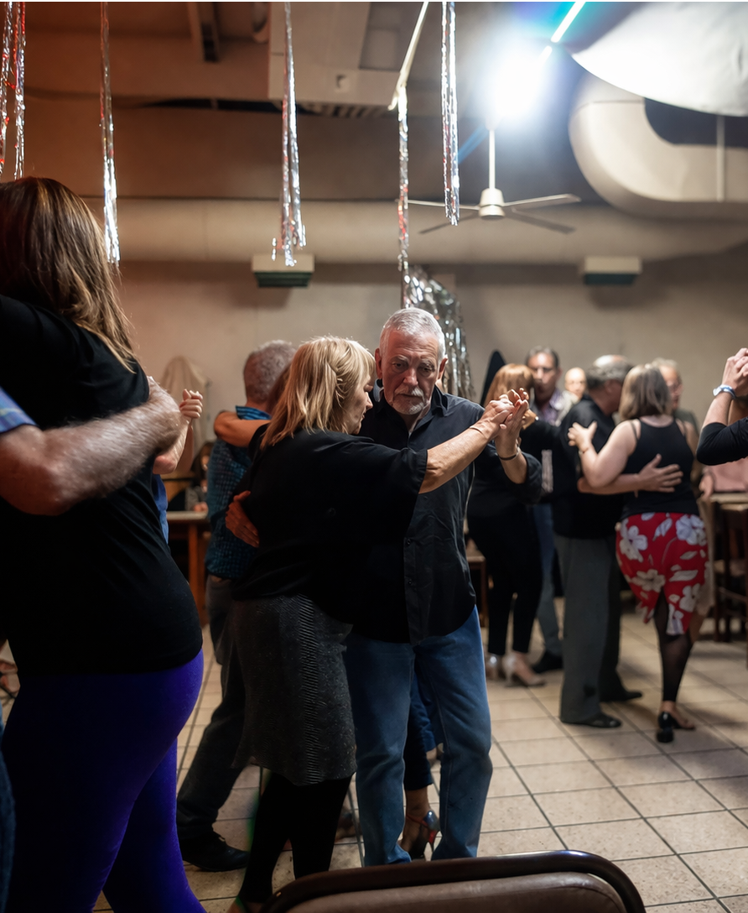
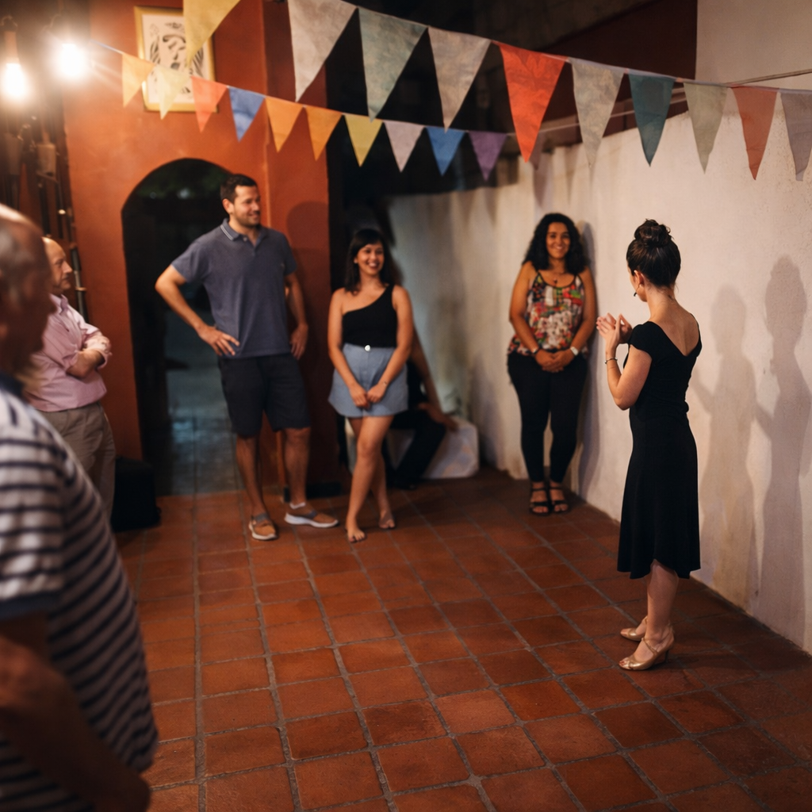
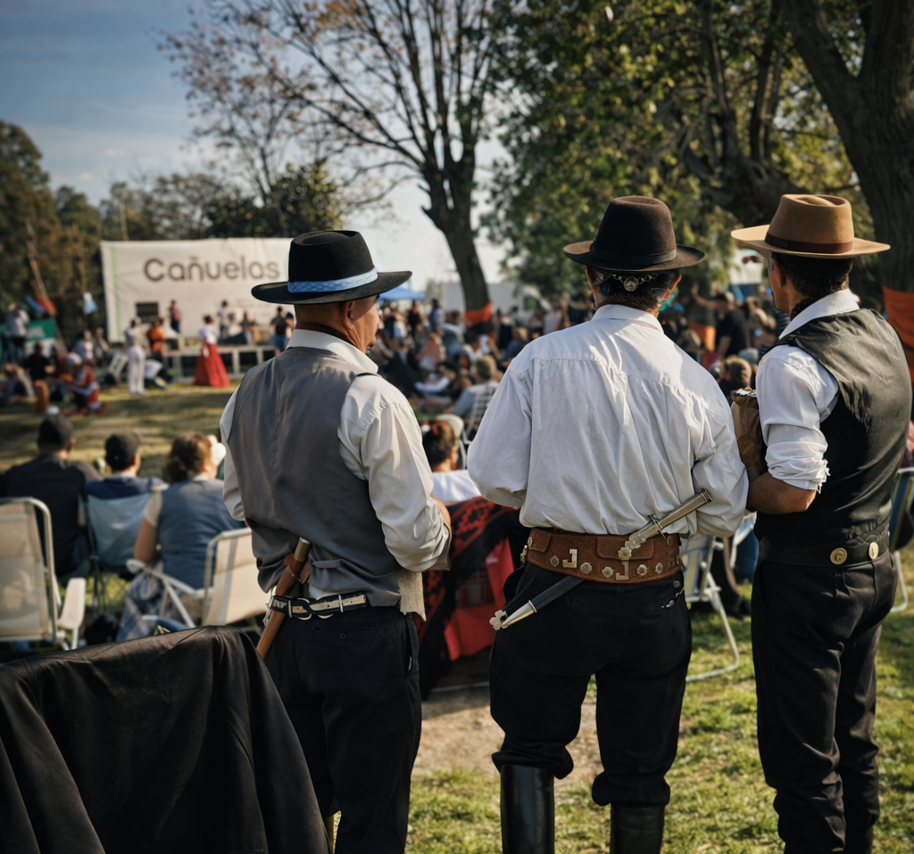
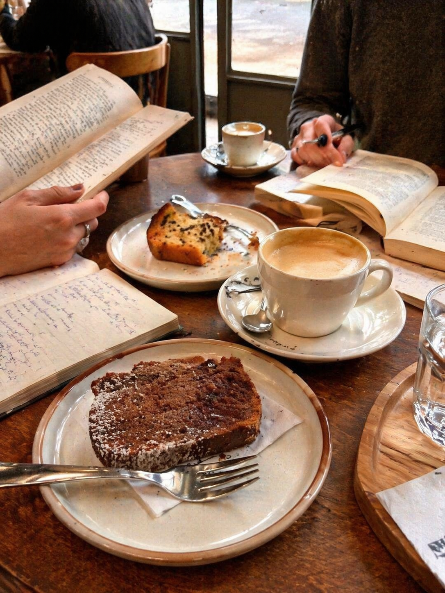
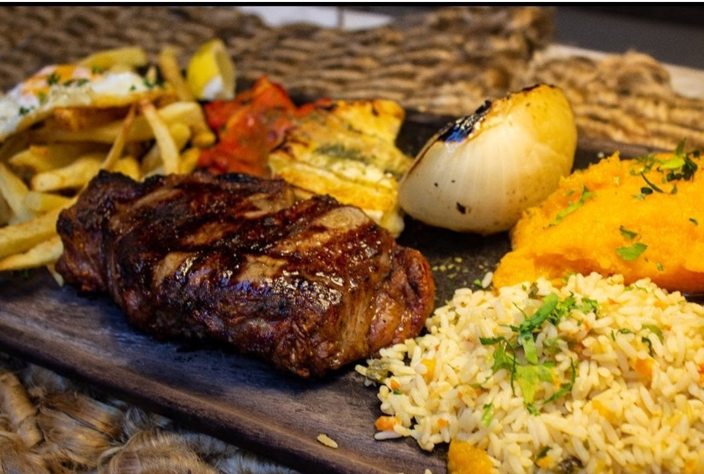
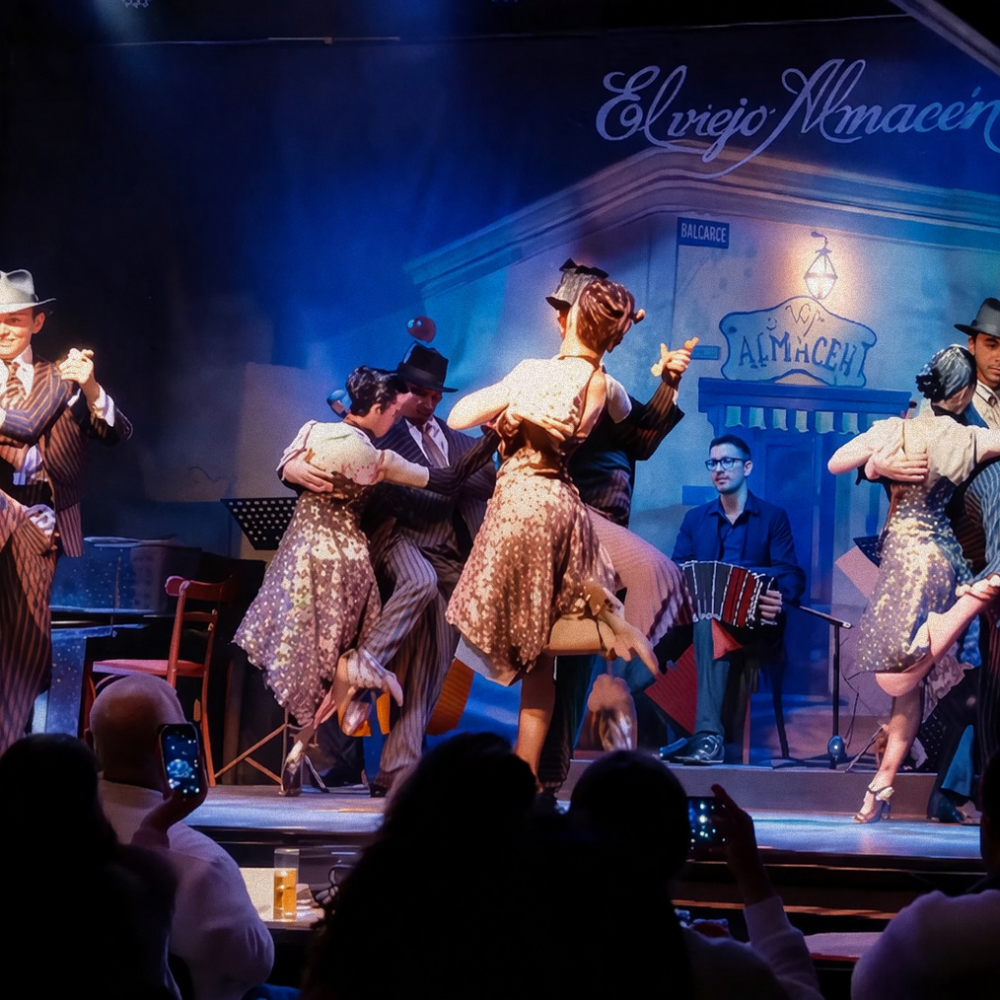
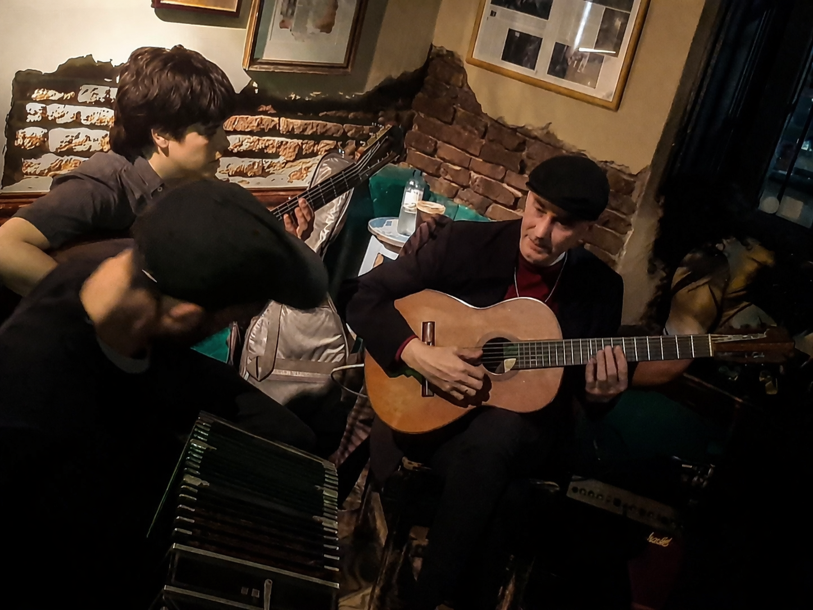

What awaits you
The Experiences

The Hidden Milonga
Amanda takes you to the milongas that locals keep to themselves — neighbourhood dance halls far from the tourist circuits. A space to observe the tradition or join the dance floor, immersing yourself in the local codes and the true culture of the embrace.
Tango & Local Nightlife
Tango City Tour
Explore the legendary corners of Boedo, Pompeya, Barracas, and Almagro. Guided by a specialized historian and hosted by Amanda, we’ll visit the cafes that inspired tango’s greatest lyrics. The journey ends sharing coffee and conversation at a century-old confectionery.
History & Heritage
Tango Dance Class
Learn the foundations or refine your style in private sessions. Guided by Amanda’s specialized eye, you will build confidence and unlock the unique dancer within you. To enrich your journey, Amanda invites you into semi-private classes with her own local students, creating a warm circle of friends to hit the milongas together.
Dance & Interpretation
A Day in the Countryside
Leave the city for a scenic drive to the heart of the province. Enjoy an asado in century-old general stores, explore artisan fairs where the gaucho tradition is alive, and join our monthly festivals of folk music and dance.
Rural & Tradition
Literary & Spanish Sessions
Explore Argentina’s soul through its great authors and poets. Private Spanish lessons and literary talks led by a literature teacher. From coffee shop sessions to visits at the National Library or writers’ historic houses. A drive through Buenos Aires' words.
Café & Books
Porteño Table
A curated culinary journey of iconic neighborhood spots, including classic bodegones, parrillas, and pizzerias. Experience the city that never sleeps through its authentic flavors, enjoying a local gastronomy that stays alive long after midnight.
Flavor & Identity
Tango Show Night
Enjoy an elegant three-course dinner followed by a spectacular live performance with an orchestra, period costumes, and world-class dancers staging the evolution of tango—often featuring traditional folklore.
Stage & FlashbackTeatro Colón Night
Attend one of the world's finest opera, ballet, and music houses. Amanda secures the best locations and accompanies you to the performance, followed by a late-night dinner—a true local custom—to round off a monumental evening.
Art & Performance
A Night of Music
An intimate evening of high-caliber live tango, shared among local friends over homemade food and wine. From small neighborhood bars to exclusive sessions in a private cultural house, guitar duos and classical pianists perform right beside you. A pure, up-close listening experience completely off the beaten path.
Live Sound & Atmosphere